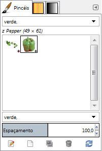

Nos diálogos de Pincéis, Degradês, Texturas e Paletas, e alguns outros diálogos de encaixe, você pode definir rótulos (tags) para os recursos, e então, organizar os itens de acordo com os rótulos dados.
Tagging is divided in two parts:
-
A “Filter” field at the top where you can enter or select a tag previously defined. Only the resources (Brushes, gradients, patterns, palettes, etc.) that have the specified tag, will be displayed.
You can enter several tags, separated with commas. In which case only the resources that have all these tags defined, will be shown.
Selecting a tag with the mouse works differently: only a single tag can be active at a time. If you want to select another tag, you first have to click the active tag to unselect that one, before selecting a different tag.
-
“Enter tag” field, below the list of resources can be used to add tags to the selected resource. The tags belonging to the current brush, gradient, pattern, palette, etc. are displayed.
You can add more tags to the current resource by clicking on one of the defined tags in the pop-up list of the field; or you can create your own tag for this item by typing its name in the field. The new tag will then appear in the tag list.
![[Nota]](images/note.png)
|
Nota |
|---|---|
|
The Fonts dialog also has Filter and Enter tag fields. But GIMP doesn't yet automatically generate any tags from fonts metadata, nor does it save the tags you add to fonts. |
Figura 15.44. Exemplo

In this example, we defined a “green” tag for the Pepper and Vine brushes. Then, we entered “green” in the Filter input field and so, only brushes with the green tag are displayed.
![[Dica]](images/tip.png)
|
Dica |
|---|---|
|
Para atribuir o mesmo rótulo a vários items de uma vez, ponha o diálogo no modo de Lista, e use Ctrl+ nos pincéis que você quer selecionar. |
Você pode remover rótulos: selecione um item, então selecione um rótulo no campo de “Digite rótulo”, e pressione a tecla Delete. Com isso, o rótulo é removido do item.